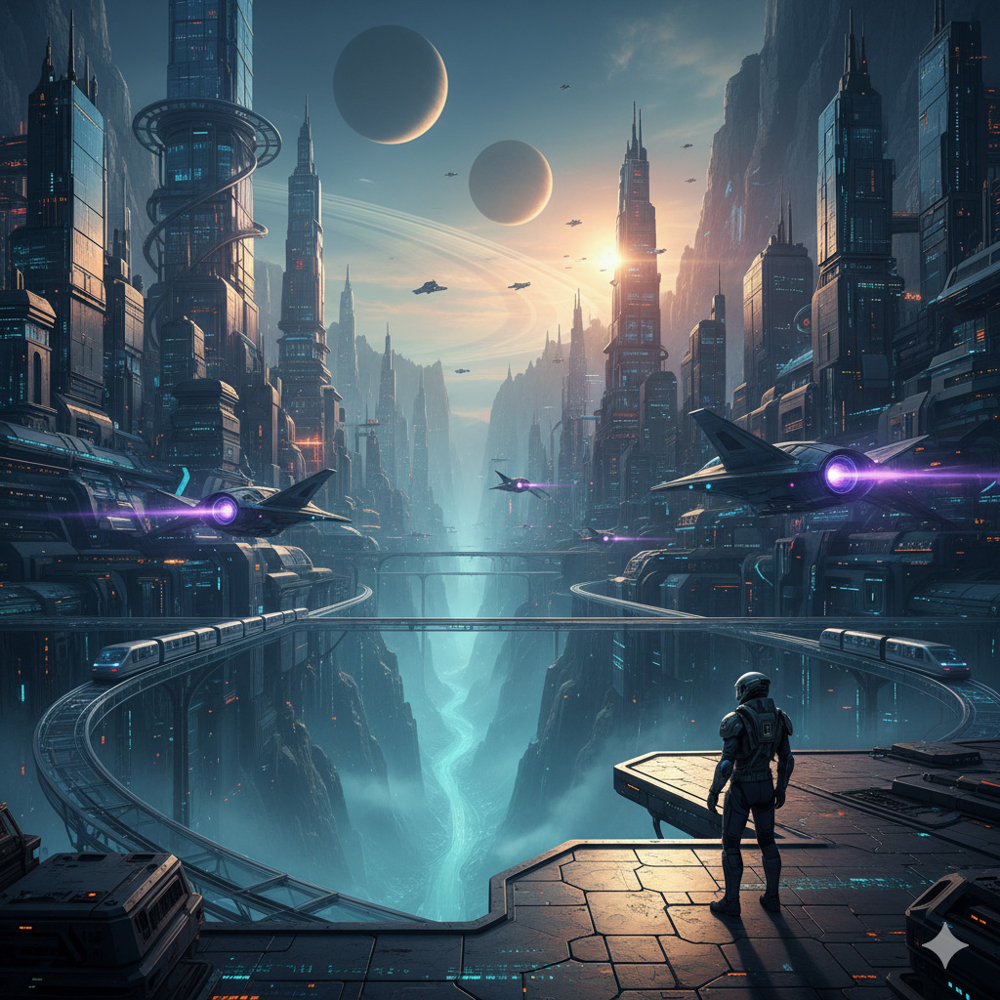
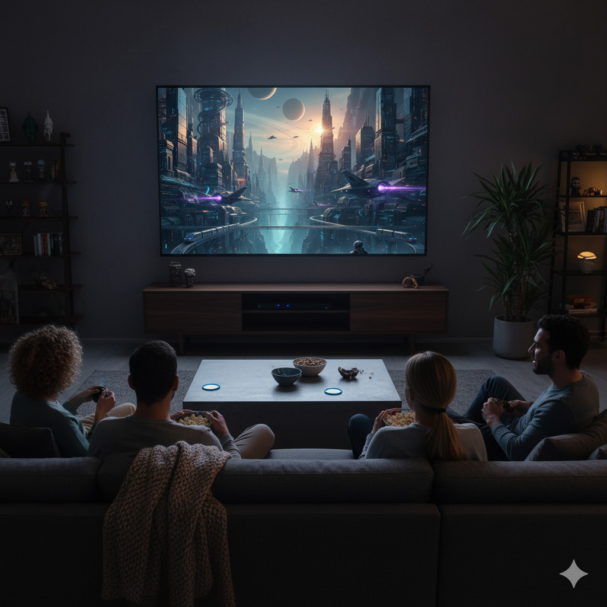
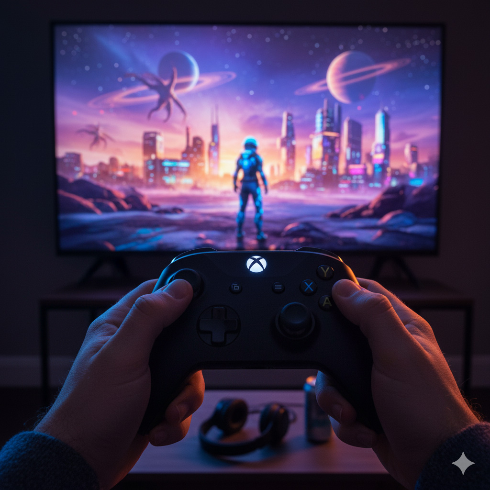
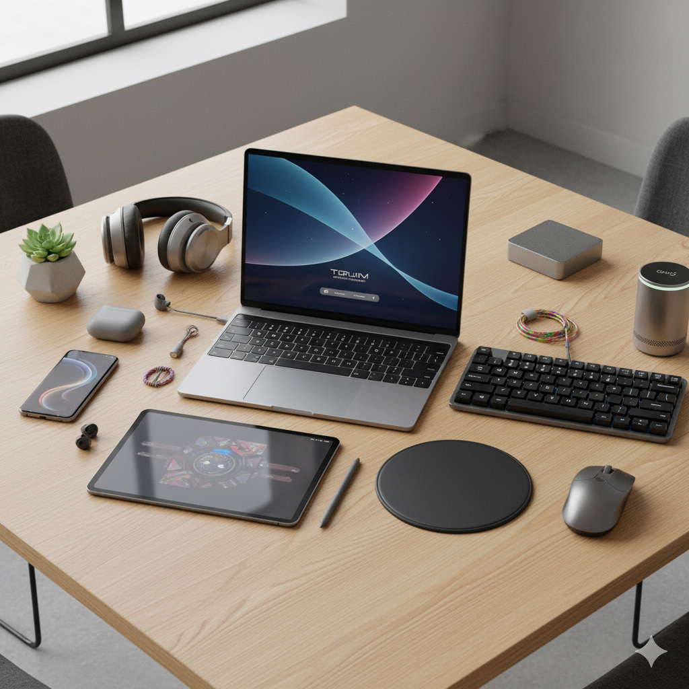

Filmes e Séries

Explorando novos mundos através do cinema
Descubra os lançamentos mais aguardados e clássicos atemporais do universo cinematográfico. De blockbusters a produções independentes, há sempre algo novo para assistir.

Maratonar nunca foi tão divertido
As séries dominaram a cultura pop, oferecendo narrativas complexas e desenvolvimento de personagens profundos. Encontre sua próxima obsessão televisiva aqui.
Música e Podcasts
A trilha sonora da sua vida
Explore novos artistas, gêneros musicais e playlists cuidadosamente curadas para cada momento do seu dia. Da música clássica ao hip-hop, há ritmos para todas as emoções.
Conhecimento e entretenimento em formato de áudio
Os podcasts revolucionaram a forma como consumimos conteúdo. De comédia a ciência, de notícias a narrativas ficcionais, há um podcast para cada interesse.
Games e Tecnologia

Imersão total em mundos virtuais
Os videogames evoluíram de simples passatempos para experiências narrativas complexas. Descubra os lançamentos, análises e dicas para aproveitar ao máximo seus jogos favoritos.

A tecnologia moldando nosso entretenimento
A tecnologia avança rapidamente, transformando como consumimos entretenimento. De realidade virtual a streaming em 8K, acompanhe as inovações que estão redefinindo nossas experiências digitais.